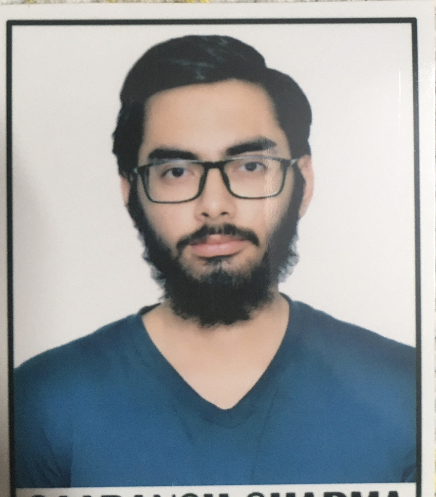

Saaransh Sharma

Bachelor of Technology
in Computer Science and Engineering
Indian Institute of Technology, Ropar
Education
- Bachelor of Technology in Computer Science and Engineering - Indian Institute of Technology, Ropar. CGPA - 7.61. Year 2022 - 2026
- Senior Secondary CBSE. Percentage : 97.2 %. Year 2022
- Secondary CBSE. Percentage : 93 %. Year 2022
Projects
Exploring Social Network Analysis
Course - DSA || Faculty - Dr Anil Shukla
- Made a recommendation algorithm for social media handles like Meta,Twitter etc.
- Implemented Kosaraju’s and Tarjan’s algorithms in C++ to identify strongly connected components (SCCs) in a directed
graph representing social media users and their connections.
- GitHub
Cache Memory Simulator: Reducing Conflict Misses
Course - Computer Architecture || Faculty - Dr TV Kalyan and Dr Neeraj Goyal
- Analyzed and reduced conflict misses in a last-level cache configuration (2MB, 16 ways, 64-byte block size).
- Implemented an address remapping strategy to classify cache sets into hot and cold sets, improving cache utilization.
- Enhanced hit rates, AMAT, and IPC, demonstrating significant performance improvements.
- GitHub
Post-Pandemic Credit Card Introduction in Indian Market Analysis and A/B Testing Approach
Individual Project
- The project aimed to launch a credit card in post-COVID India for a hypothetical bank.
- Phase 1 involved cleaning and analyzing data to identify target customer segments.
- Phase 2 we used A/B Testing approach on two groups (test group and control group) to test the credibility of our new credit
card.
- GitHub
Risc-V Assembler and Branch Predictor Simulator
Course - Computer Architecture // Faculty - Dr TV Kalyan and Dr Neeraj Goyal
- Collaboratively developed a 32-bit RISC-V assembler in C++ to convert assembly code (.asm) to machine code (.mc),
maintaining proper segment formats.
- Utilized Git for version control and team synchronization, with comprehensive monitoring of code updates and repository
activity
- In extension to this developed a RISC-V branch predictor simulation in C++
- Incorporated dynamic instruction trace handling with improved branch prediction methods (Always taken, Always nottaken, 1-bit, and 2-bit dynamic predictors).
- Achieved high accuracy in branch prediction, effectively maintaining a branch target buffer and history table for enhanced
performance analysis.
- GitHub
Understanding Data Compression using Shanonn’s Theory
Course - Discrete Maths || Faculty - Dr S.R.S Iyengar
- Understood Data Compression and its methods based of Shannon’s Information Theory.
- Implemented Huffman Coding Algorithm.
- GitHub
Skills
Technical Skills:
C, C++, Python, JuPyter Notebook, Pandas, Matplotlib, Seaborn, SciPy, NumPy, Html, Excel, Github.Soft Skills:
Problem Solving, Work Ethic, Operations, Leadership, Communication, Creativity
Key Courses Taken:
Computer Science
Data Structures and Algorithms, Operating System, Analysis and Design of Algorithm, Machine Learning, Digital Logic Design, Computer Architecture, Programming
Paradigms and Pragmatics, Introduction to Databases, Discrete Maths.Mathematics
Probability and Statistics, Linear Algebra, Calculas , Differential EquationElectrical
Basic Electronics, Signals and System, Basics of Electrical EngineeringHumanities
Economics, Professional English, Professional Ethics, Human Geography, History of Technology
Positions of Responsibility
Sports Representative,Weightlifting and Gym, IIT Ropar
- Supervising and ensuring the smooth operation of all gyms at IIT Ropar
- Coordinating with the Institute Administration to improve the Weightlifting and Gym facilities to cater to the needs of the
Fitness community
UG ISMP Mentor, Institute Student Mentorship Programme, IIT Ropar
- Guiding Freshers and communicated with them in a cordial manner so that they have a smooth transition from school life
to campus life
- Providing swift responses to all their queries and made sure I was easily approachable.
Achievments
- Among top 1%,in JEE Mains and Advanced, Year - 2022.
- KVPY Scholar, AIR 1665, Year - 2022
- Awarded Scholarship, by ICICI Bank for consistent commendable performance in Academics, Year - 2022 till present
Contact Me